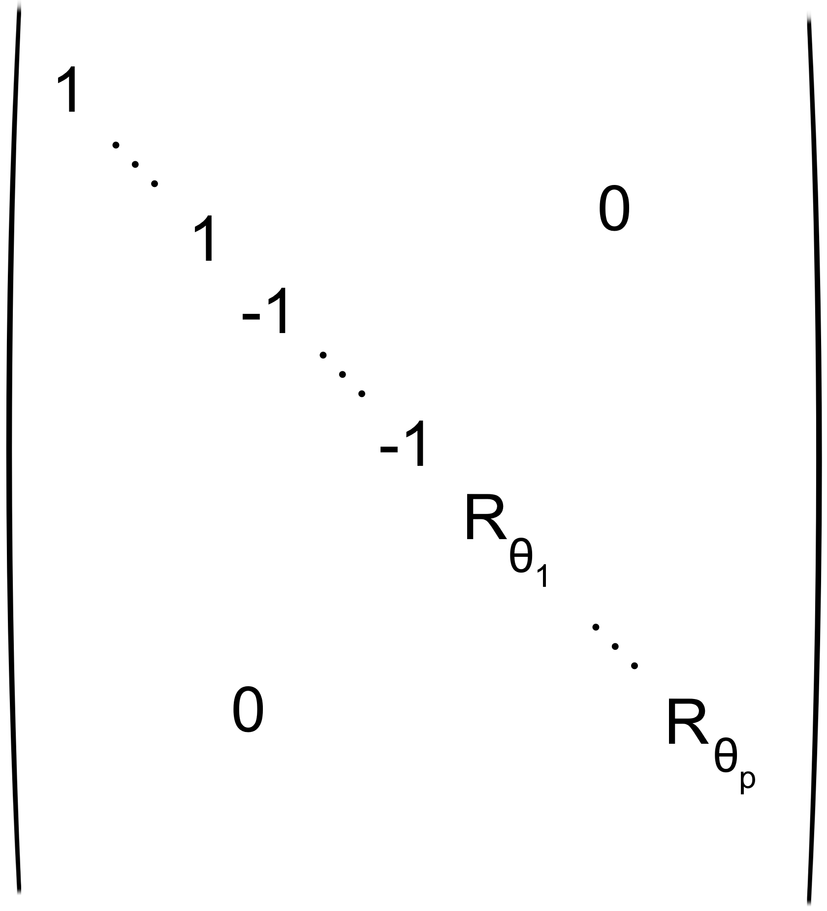
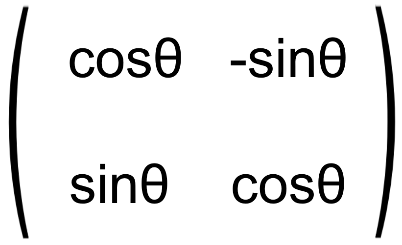

MATHS
Retour au sommaire
Espaces préhilbertiens réels, espaces euclidiens
Voir II. Espaces euclidiens
I. Espaces préhilbertiens
1)Produit Scalaire
Produit Scalaire
Un produit scalaire φ : E × E → R est une forme bilinéaire symétrique définie positive.
ie.
- ∀y∈E, x ↦φ(x,y) linéaire (Linéarité à gauche)
- ∀x∈E, y ↦φ(x,y) linéaire (Linéarité à droite)
- ∀x,y∈E, φ(x,y) = φ(y,x) (Symétrie)
- ∀x∈E, φ(x,x)≥0 (Positivité)
- ∀x∈E, φ(x,x)=0 ⇒ x=0 (Définie)
Il est noté (x|y), x·y, <x,y>
Exemples de produits scalaires
- Rn, B base canonique :
(x|y)=n∑i=1
xiyi=tXY
- C0([a,b],R) :
(f|g) = b∫a
f(t)g(t)dt
- I un intervalle de R, L2(I)={f:I→R|f2 intégrable et continue sur I} :
(f|g)=∫I fg
- I dénombrable, E = {(ai)i∈I∈RI | (ai2)i∈I sommable :
(a|b)= ∑i∈I
aibi
- Mn(R):
(A|B)=Tr(tA·B)
Inégalité de Cauchy-Schwarz
∀x,y∈E, |(x|y)|≤(x|x)(y|y)
Avec égalité ⇔ (x,y) est une famille liée
Remarque : Fonctionne aussi avec seulement une forme bilinéaire symétrique positive
Norme associée
x↦(x,x) = ‖x‖ est une norme de E
Inégalité triangulaire : cas d'égalité
‖x+y‖ = ‖x‖+‖y‖ ⇔ x=0 ou ∃λ∈R+ tq y = λx (ie. (x,y) est positivement liée)
Formules
- ‖x+y‖2 = ‖x‖2 + 2 (x|y) + ‖y‖2
- ‖x+y‖2 − ‖x-y‖2 = 4(x|y)
- ‖x+y‖2 + ‖x-y‖2 = 2‖x‖2 + 2 ‖y‖2 Identité du parallélogramme
2)Orthogonalité
Vecteurs orthogonaux
x⊥y si: (x|y)=0
Théorème de Pythagore
x⊥y ⇔ ‖x+y‖2 = ‖x‖2 + ‖y‖2
Orthogonal d'une partie
A⊂E
A⊥ = {x∈E|∀a∈A, (a|x)=0}
Propriétés de l'orthogonal d'une partie
- {0}⊥=E
- E⊥={0}
Soit A⊥ un s.e.v. de E
- A⊂B ⇒ B⊥⊂A⊥
- A⊥ = (Vect A)⊥
Soit F un s.e.v. de E
- F∩F⊥ = {0}
- F⊂F⊥⊥, avec égalité en dimension finie
Exercice : F,G s.e.v. de E, montrer que (F+G)
⊥ = F
⊥∩G
⊥
...
Exercice : F = {P∈R[X] | P(1) = 0}, F
⊥ ?
...
Somme directe orthogonale
(F
i)
1≤i≤p sous-espaces de E
- ∀i≠j, ∀x∈Fi, ∀y∈Fj, (x|y) = 0 (ie. Fi⊥Fj)
- ∑Fi est directe, on dit que la somme est directe orthogonale, noté
⊥⊕1≤i≤p
Fi
Propriété de la somme directe orthogonale
- On suppose que ∑Fi est directe orthogonale
- Soit (x1,…,xp) ∈ F1 × … × Fp
- Alors ‖
p∑i
xi‖2 = p∑i
‖xi‖2
Projection orthogonale
Soit F un sev de E,
On suppose que E = F⊕F⊥
On dispose alors de pF la projection sur F parallèlement à F⊥ : appelé Projection orthogonale sur F
Caractérisation de la projection orthogonale
x∈E
(y = pF(x))
⇔(y∈F, ∀z∈F, (x|z) = (y|z))
⇔(y∈F, ∀z∈F, ‖x-z‖ ≥ ‖x-y‖)
Remarque : ‖x-pF(x)‖ = d(x,F)
3)Familles orthogonales, orthonormales
Famille orthogonale
(ei)i∈I famille d'éléments de E, orthogonale si :
∀i,j∈I, i≠j ⇒ (ei|ej)=0
Famille orthonormale
(ei)i∈I famille d'éléments de E, orthonormale si :
∀i,j∈I, (ei|ej)=δi,j
Liberté
- (ei)i∈I orthogonale
- ∀i∈I, ei ≠ 0
- (ei)i∈I libre
Calculs en base orthonormale
(ei)i∈I base orthonormale de E
Soit x,y∈E, x = ∑i∈Ixi, y = ∑j∈Iyj
Alors (x|y) = ∑i∈Ixiyi
En particulier, ‖xi‖2 = ∑i∈Ixi2
Orthonormalisation de Schmidt
Exemple : Polynômes de Legendre
E = R[X], (P|Q) =
1∫0 P(t)Q(t) dt
(X
n)
n∈N base de E.
Il existe une unique famille (P
n)
n∈N telle que
- (Pn)n orthonormale
- ∀n∈N, Vect(P0,…,Pn) = Vect(1,X,…,Xn)
- ∀n∈N, (Pn|Xn) > 0
Projection orthogonale sur un sous-espace de dimension finie
- F s.e.v. de E, F de dimension finie
- E = F⊕F⊥
- si (ε1,…,εp) est une base orthonormale de F,
alors ∀x∈E, pF(x) = p∑i=1(x|εi)εi
Inégalité de Bessel
- (en)n∈N orthonormale
- ∀x∈E, ∑(en|x)2 converge
- ∞∑n=0(en|x)2 ≤ ‖x‖2
Suite totale
(un)n∈N est totale si: E = Vect(un)n∈N
(ie. Vect(un)n est dense dans E pour la norme ‖·‖ associée à (·|·) )
Inégalité de Bessel : cas d'égalité
- (en)n∈N orthonormale, totale
- pn la projection orthogonale sur Vect(e0,…en)
- ∀x∈E,
pn →n → ∞ x dans (E,‖ ‖)
- ‖x‖2 = ∞∑n=0(en|x)2
Remarque :
pn(x) = n∑k=1(x|εk)εk
Donc x = ∞∑i=0(x|εi)εi
La famille des polynômes de Legendre est-elle totale ?
wip, utliser le théorème de Stone-Weierstrass...
II. Espaces euclidiens
Un espace euclidien est un espace pré-hilbertien réel de dimension finie
Propriété des espaces euclidiens
- Tout espace euclidien E≠{∅} admet des bases orthonormales
- E euclidien, F sev de E
⇒ alors E = F⊕F⊥ et F = F⊥⊥
- Toute famille northonormale peut être complétée en une base orthonormale
1)Groupe orthogonal
Groupe orthogonal de E
u∈L(E) est dite orthogonale si: ∀x,y∈E, (u(x)|u(y)) = (x|y)
Caractérisation du groupe orthogonal
u est orthogonale ⇔ ∀x∈E, ‖u(x)‖ = ‖x‖
Sous-groupe
O(E) = {u∈L(E)|u orthogonale} est un sous-groupe de GL(E), dit groupe orthogonal
Remarque :
u∈O(E). Soit λ∈Sp(u), soit x∈Eλ(u)\{0}
‖u(x)‖ = ‖λx‖ = |λ|‖x‖
or ‖u(x)‖ = ‖x‖
Donc |λ| = 1, puis Sp(u) ⊂ {−1,1}
Groupe orthogonal et bases
u∈L(E). On a l'équivalence des assertions suivantes :
- u∈O(E)
- ∃B base orthonormale de E tq u(B) base orthonormale de E
- ∀B base orthonormale de E, u(B) est une base orthonormale de E
2)Matrices orthogonales
Matrice orthogonale
M∈Mn(R)
M est orthogonale s: tMM = In
Matrice transposée orthogonale
M est orthogonale ⇔ tM est orthogonale
Sous-groupe
O(n) = {M∈Mn(R)|tMM = In} est un sous-groupe de GLn(R), dit groupe orthogonal
Colonnes - Base orthonormale de R
n euclidien canonique
M∈O(n) ⇔ Les colonnes de M∈Mn(R) forment une base orthonormale de Rn euclidien canonique
Lien endomorphisme orthonormal, matrice orthonormale
Soit u∈L(E), B une base orthonormale de E, alors
u∈O(E) ⇔ MB(u)∈O(n)
Conséquence :
Matrices de passage
Soit M∈Mn(R)
M∈O(n) ⇔ ∃B, B' des b.o.n. de E tq M = PB→B' = PBB'
Orientation d'un espace euclidien
...
3)O(2), O(3)
O(2)
...
Rθ =., Σθ =.
SO(2) est un groupe commutatif
Angle d'une rotation...
Remarque...
O(3)
Produit mixte...
4)Isomorphisme canonique entre E et E*
a∈E
φa : E →R
x ↦ (a|x)
φa∈E*
θ : E → E*
a ↦ φa
Application : Produit vectoriel
...
Produit vecetoriel, n=3
...
5)Réduction orthogonale dans O(n),O(E)
Stabilité de l'orthogonal par l'endomorphisme orthogonal
- Soit u∈O(E) F un sev de E
- F stable par u
- F⊥ stable par u
Lemme : Droite stable, Plan stable
- Soit E un espace vectoriel réel de dimension finie n≥1
- u∈L(E)
- il existe au moins une droite (propre) stable par u ou un plan stable par u
Théorème : Réduction orthogonale
u∈O(E)
∃B une b.o.n. dans laquelle
MB(u) = ,
où Rθ =  avec θ ∉ πℤ
Exercice : SO(n) est connexe par arcs
...
6)Endomorphismes symétriques
Endomorphisme symétrique
u∈L(E) est dit symétrique si: ∀x,y∈E, (u(x)|y) = (x|u(y))
Stabilité de l'orthogonal par l'endomorphisme symétrique
- Soit u∈L(E) symétrique, F un sev de E
- F stable par u
- F⊥ stable par u
Projecteur orthogonal
Soit p∈L(E) un projecteur (ie. p∘p=p)
p symétrique ⇔ p est un projecteur orthogonal
Lien endomorphisme symétrique, matrice symétrique
Soit u∈L(E), B une b.o.n. de E
u symétrique ⇔ MB(u) est symétrique
Théorème spectral
- Soit u∈L(E) symétrique
- Alors u est diagonalisable
-
De plus, E =
⊥⊕λ∈Sp(u)
Eλ(u)
- En particulier, il existe une b.o.n. propre pour u
Théorème spectral : Version matricielle
- Soit A∈Mn(R) symétrique
- Alors A est diagonalisable
- A est orthogonalement semblable à une matrice diagonale, ie.
∃P∈O(n), D diagonale telle que A = PDP−1 = PDtP